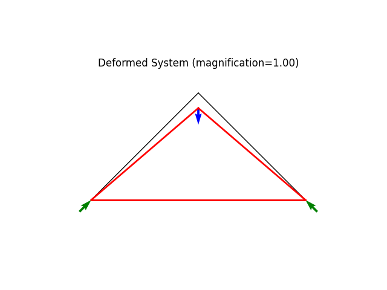

Note
Go to the end to download the full example code
Simple triangular truss.
This example is structurally identical to ExampleTruss01 but utilizes the alternative input style for adding Nodes and Elements to the model.
The system is statically determined and allows for easy validation of calculated deformation, reactions and internal forces.
Author: Peter Mackenzie-Helnwein
Setup
import matplotlib.pyplot as plt
from femedu.examples.Example import *
from femedu.domain.System import *
from femedu.domain.Node import *
from femedu.elements.Truss import *
from femedu.materials.FiberMaterial import *
class ExampleTruss03(Example):
def problem(self):
# initialize a system model
B = 6.0 * 12
H = 3.0 * 12
params = {'E': 10., 'A': 1., 'nu': 0.0, 'fy': 1.e30}
model = System()
# create nodes
nd0 = Node(0.0, 0.0)
nd1 = Node( B, 0.0)
nd2 = Node(0.5*B, H)
model += nd0
model += nd1
model += nd2
# create elements
model += Truss(nd0, nd1, FiberMaterial(params)) # bottom 1
model += Truss(nd0, nd2, FiberMaterial(params)) # up right diag 1
model += Truss(nd1, nd2, FiberMaterial(params)) # up left diag 1
# define support(s)
nd0.fixDOF('ux') # horizontal support left end
#nd0 //= 0
nd0.fixDOF('uy') # vertical support left end
nd1.fixDOF('uy') # vertical support right end
# add loads
# .. load only the upper nodes
nd2.setLoad((0.0, -1.0), ('ux','uy'))
# analyze the model
model.solve()
# write out report
model.report()
# create plots
model.plot(factor=1., filename="truss03_deformed_a.png")
# fix horizontal motion of node 1
nd1.fixDOF('ux')
# add loads: same load -- nothing to do
# RE-analyze the model
model.resetDisp()
model.solve()
# skip the report
model.report()
# create plots
model.plot(factor=1., filename="truss03_deformed_b.png")
Run the example by creating an instance of the problem and executing it by calling Example.run()
if __name__ == "__main__":
ex = ExampleTruss03()
ex.run()

- 
System Analysis Report
=======================
Nodes:
---------------------
Node_0:
x: [0. 0.]
fix: ['ux', 'uy']
u: [0. 0.]
Node_1:
x: [72. 0.]
fix: ['uy']
u: [3.6 0. ]
Node_2:
x: [36. 36.]
P: [ 0. -1.]
u: [ 1.8 -6.89116882]
Elements:
---------------------
Truss: node 0 to node 1:
material properties: FiberMaterial(Material)({'E': 10.0, 'A': 1.0, 'nu': 0.0, 'fy': 1e+30}) strain:0.04761904761904761 stress:{'xx': 0.4761904761904761, 'yy': 0.0, 'zz': 0.0, 'xy': 0.0}
internal force: 0.4761904761904761
Pe: [ 0.4761904761904761 0.0 ]
Truss: node 0 to node 2:
material properties: FiberMaterial(Material)({'E': 10.0, 'A': 1.0, 'nu': 0.0, 'fy': 1e+30}) strain:-0.05823563981487166 stress:{'xx': -0.5823563981487166, 'yy': 0.0, 'zz': 0.0, 'xy': 0.0}
internal force: -0.5823563981487166
Pe: [ -0.46140136076020055 -0.3553136062035647 ]
Truss: node 1 to node 2:
material properties: FiberMaterial(Material)({'E': 10.0, 'A': 1.0, 'nu': 0.0, 'fy': 1e+30}) strain:-0.058235639814871655 stress:{'xx': -0.5823563981487165, 'yy': 0.0, 'zz': 0.0, 'xy': 0.0}
internal force: -0.5823563981487165
Pe: [ 0.4614013607602005 -0.3553136062035646 ]
System Analysis Report
=======================
Nodes:
---------------------
Node_0:
x: [0. 0.]
fix: ['ux', 'uy']
u: [0. 0.]
Node_1:
x: [72. 0.]
fix: ['uy', 'ux']
u: [0. 0.]
Node_2:
x: [36. 36.]
P: [ 0. -1.]
u: [ 0. -5.09116882]
Elements:
---------------------
Truss: node 0 to node 1:
material properties: FiberMaterial(Material)({'E': 10.0, 'A': 1.0, 'nu': 0.0, 'fy': 1e+30}) strain:0.0 stress:{'xx': 0.0, 'yy': 0.0, 'zz': 0.0, 'xy': 0.0}
internal force: 0.0
Pe: [ 0.0 0.0 ]
Truss: node 0 to node 2:
material properties: FiberMaterial(Material)({'E': 10.0, 'A': 1.0, 'nu': 0.0, 'fy': 1e+30}) strain:-0.06989658167930027 stress:{'xx': -0.6989658167930026, 'yy': 0.0, 'zz': 0.0, 'xy': 0.0}
internal force: -0.6989658167930026
Pe: [ -0.530317996923979 -0.4553197065619366 ]
Truss: node 1 to node 2:
material properties: FiberMaterial(Material)({'E': 10.0, 'A': 1.0, 'nu': 0.0, 'fy': 1e+30}) strain:-0.06989658167930027 stress:{'xx': -0.6989658167930026, 'yy': 0.0, 'zz': 0.0, 'xy': 0.0}
internal force: -0.6989658167930026
Pe: [ 0.530317996923979 -0.4553197065619366 ]
Total running time of the script: ( 0 minutes 0.181 seconds)